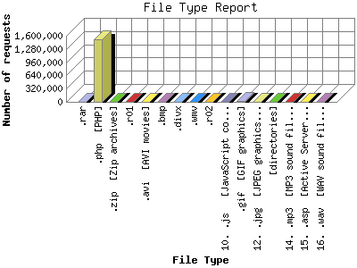

The File Type Report identifies the type of information that is requested from the web site. GIF and JPG are the two types of graphic (image) files that are most commonly supported by web browsers. HTML (sometimes abbreviated HTM), ASP, and [directories] all represent actual pages. The number of image requests will almost always outnumber page requests as one page may contain several images.
This report shows results with at least 0.100000 percent of the total bytes. This report is sorted by amount of bytes transferred.

| File Type | Number of requests | Percentage of the bytes | |
|---|---|---|---|
| 1. | .rar | 550 | 52.03% |
| 2. | .php [PHP] | 1,505,780 | 30.47% |
| 3. | .zip [Zip archives] | 83 | 4.55% |
| 4. | .r01 | 4 | 2.72% |
| 5. | .avi [AVI movies] | 1 | 2.05% |
| 6. | .bmp | 179 | 1.51% |
| 7. | .divx | 1 | 1.33% |
| 8. | .wmv | 11 | 1.25% |
| 9. | .r02 | 4 | 1.20% |
| 10. | .js [JavaScript code] | 3,067 | 0.86% |
| 11. | .gif [GIF graphics] | 17,496 | 0.42% |
| 12. | .jpg [JPEG graphics] | 4,267 | 0.36% |
| 13. | [directories] | 763 | 0.33% |
| 14. | .mp3 [MP3 sound files] | 60 | 0.27% |
| 15. | .asp [Active Server Pages] | 557 | 0.22% |
| 16. | .wav [WAV sound files] | 486 | 0.22% |
| [not listed: 8] | 1,857 | 0.21% | |
This report was generated on November 7, 2007 07:33.
Report time frame October 8, 2007 00:05 to November 7, 2007 00:19.
| Web statistics report produced by: analog 6.0 / Report Magic 2.21 |